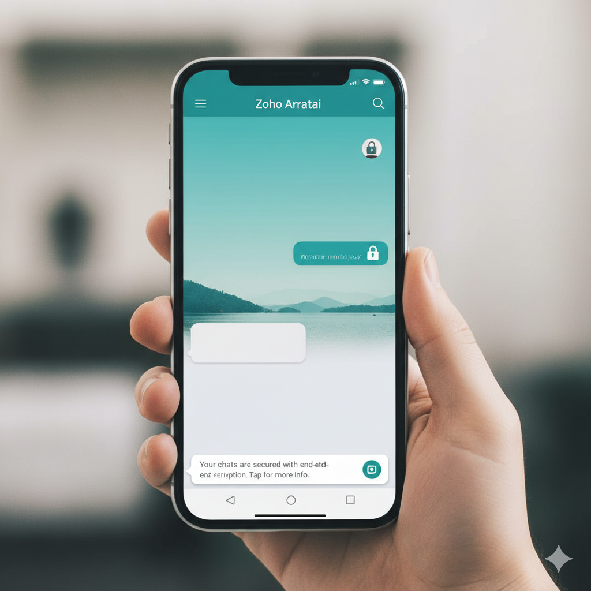
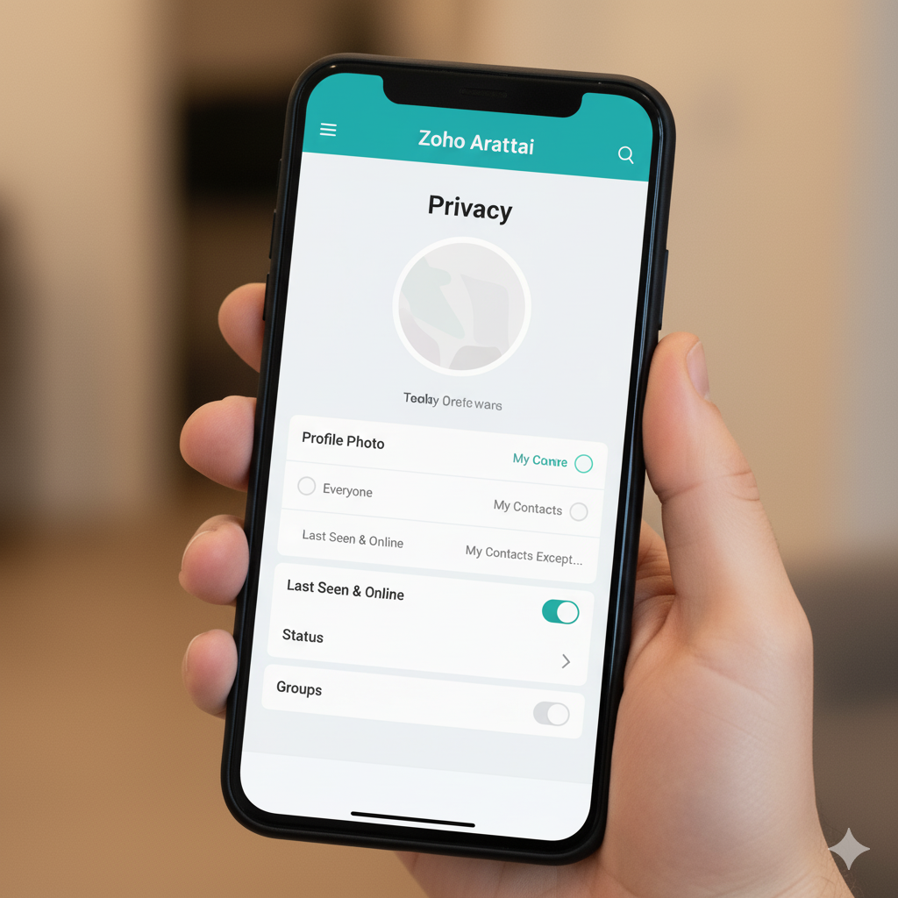
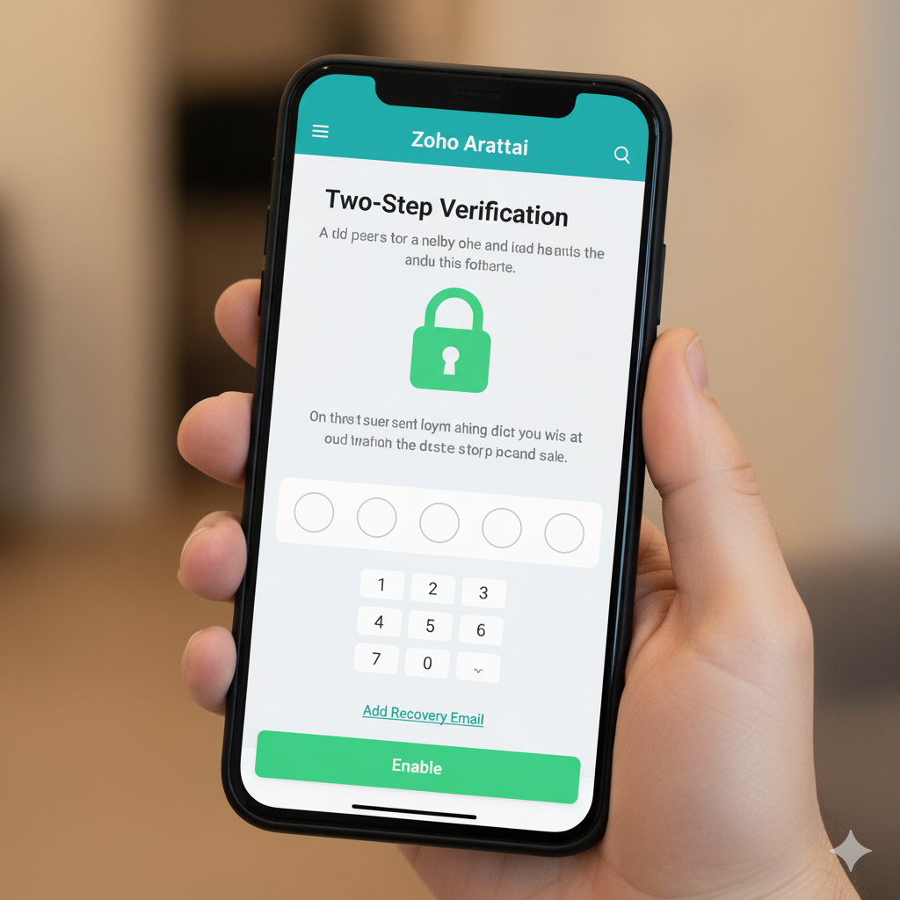
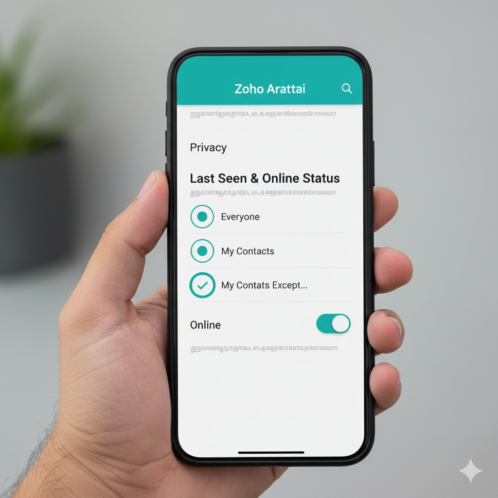
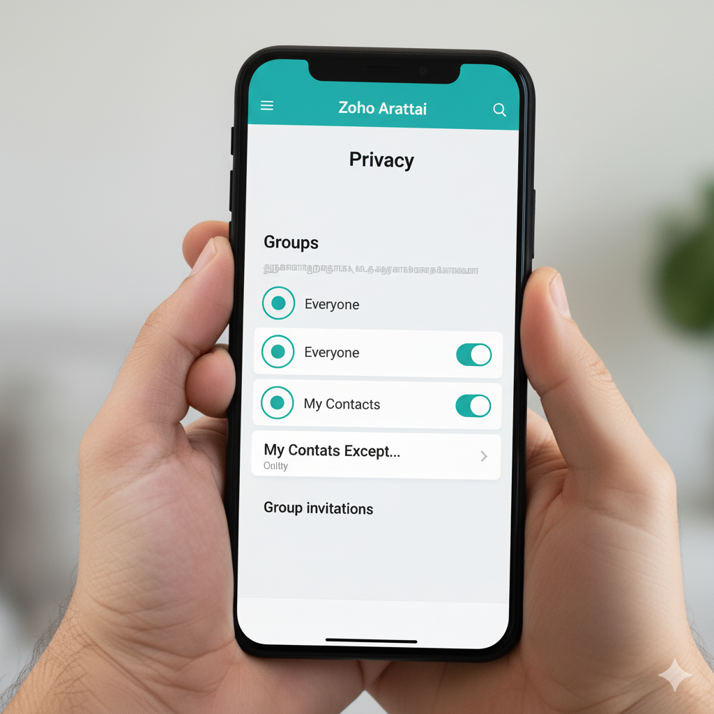
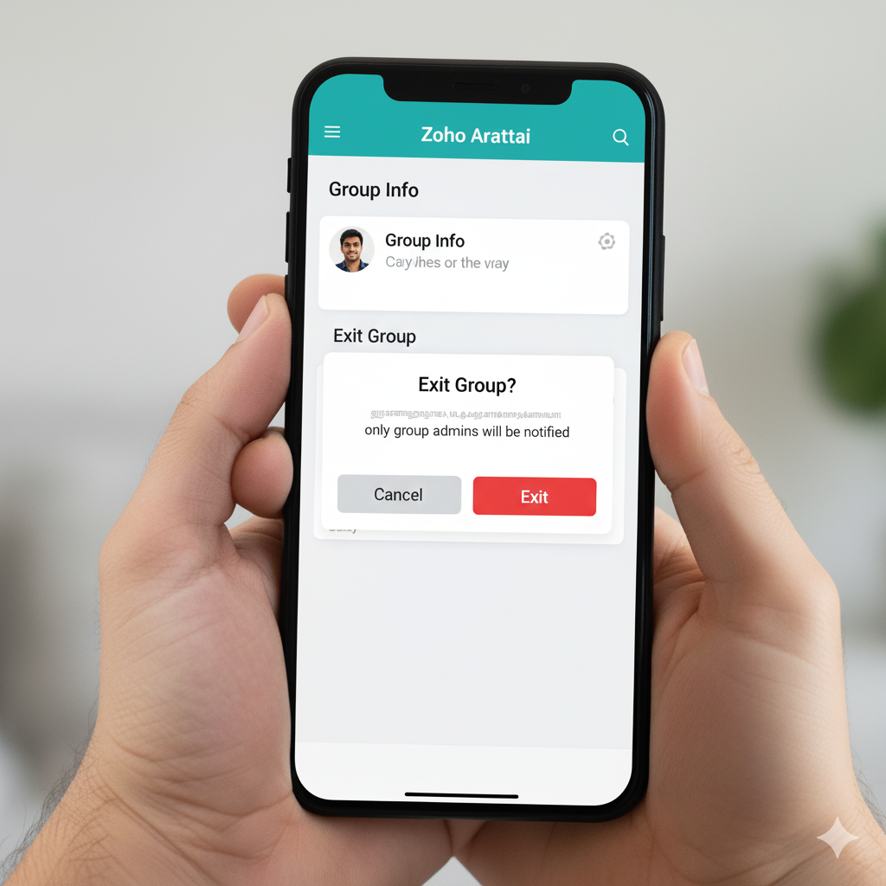
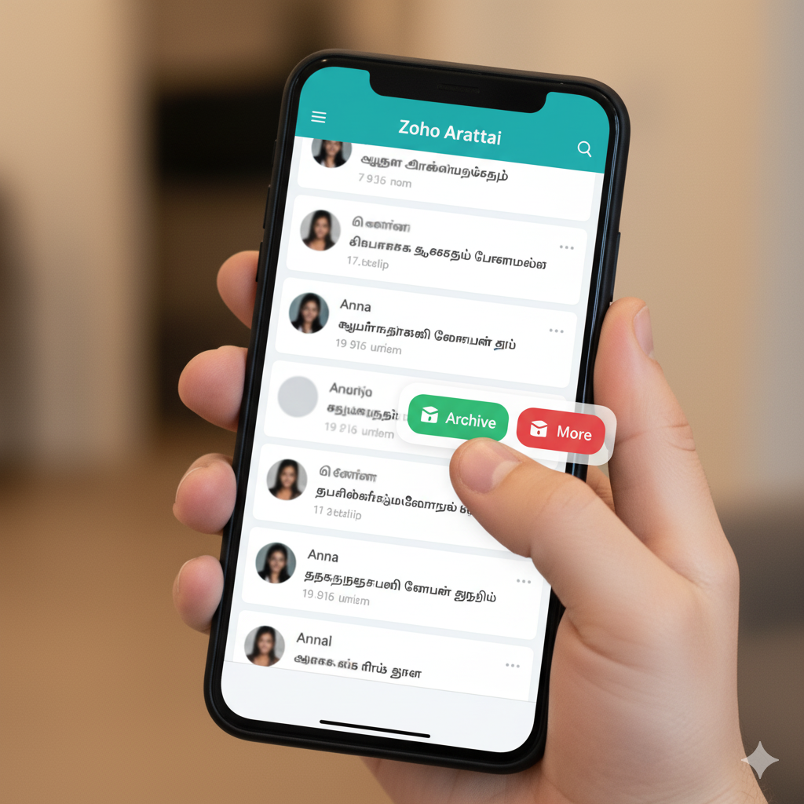
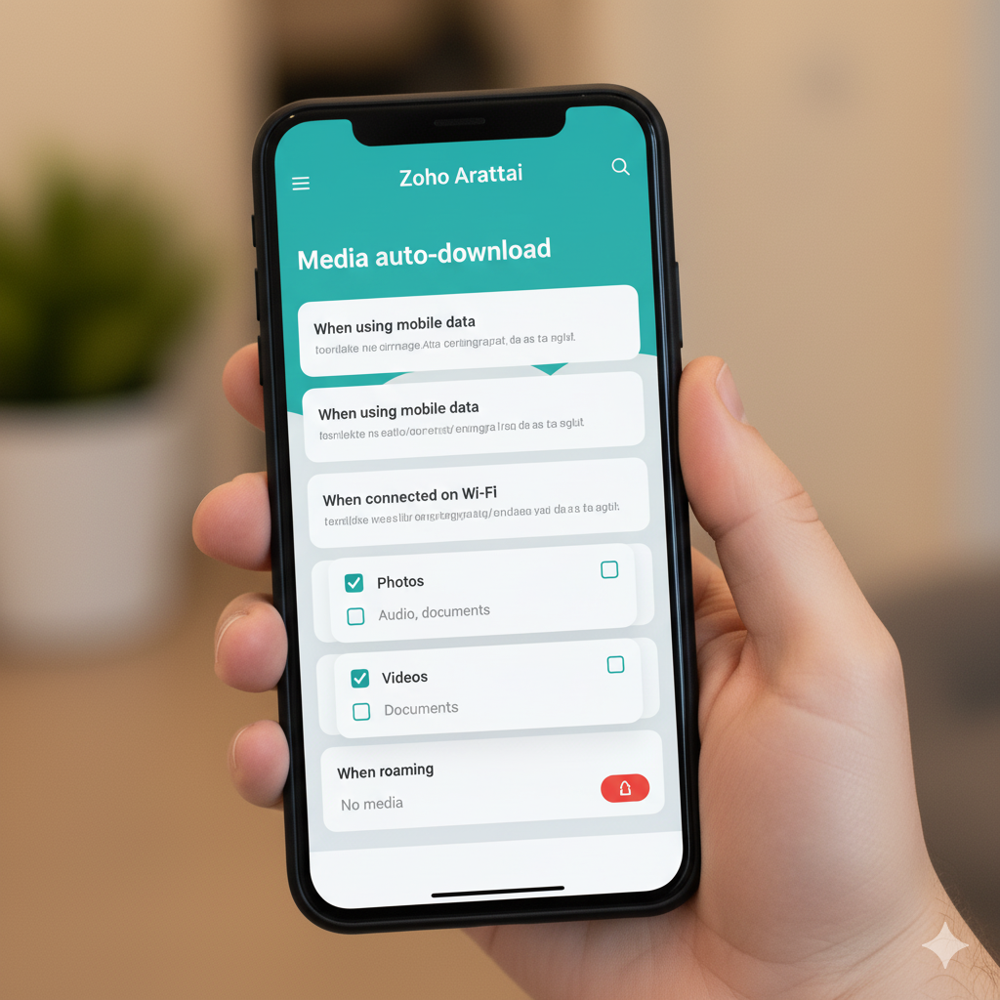
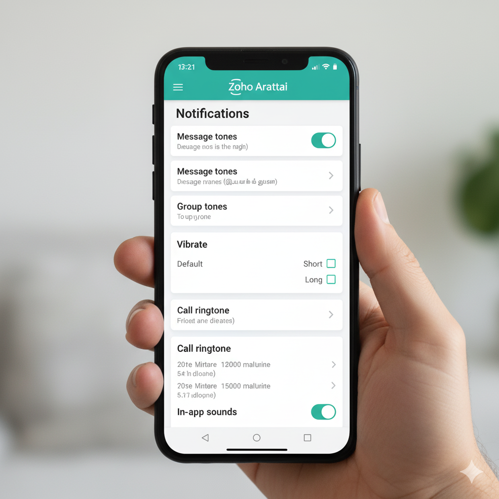

Elevate Your Digital Sphere: 10 Zoho Arattai Settings You Should Change Right Now
Published: October 2025 | Reading Time: Approx. 10 Minutes
In the contemporary digital landscape, the ubiquity of messaging apps has seamlessly woven into the fabric of our modern lives, bridging geographical gaps and uniting us with our loved ones and professional peers worldwide. Among the options, **Zoho Arattai** stands out, offering a secure, feature-rich, and performance-optimized platform that works beautifully even on slower networks.
While Arattai is simple to use right out of the box, its true power lies beneath the surface. Hidden gems—smart settings and unique features—have the potential to elevate your messaging experience far beyond the default. This article embarks on an exploration of these hidden treasures, unveiling **ten pivotal Zoho Arattai settings** that possess the prowess to revolutionize your interaction sphere.
By the time you finish this guide, you’ll be equipped to integrate these configurations into your daily Arattai routine, propelling your messaging encounters towards a zenith of effectiveness, personalization, and security.
Security & Privacy Essentials
Your digital identity is precious. Arattai provides several powerful shields to safeguard your personal space and conversation integrity.
1. Safeguard Your Profile and Presence
 How to Find It: Settings > Account > PrivacyEmpowering users with a robust shield for their digital presence, Arattai stands as a sentinel of privacy in the virtual realm. Within its intricate web of settings lies an abundance of options designed to place you firmly in control of who gains access to your information. The process is as intuitive as it is powerful: a few clicks transport you to a haven of choices.
You can finely tune the visibility of your **profile photo**, **status**, and **"last seen" information**. You can restrict access to: **Everyone**, **My Contacts**, or, the most powerful setting, **My Contacts Except...** This allows you to exclude specific individuals from seeing your updates, offering precision control over who enters your virtual domain.
The underlying essence lies in the precision of this control—a virtual gatekeeper that only permits entry to the inner sanctum of your information for those you trust implicitly. By grasping the reins of access, you craft an impregnable fortress for your data. This strategic approach cultivates an environment where you can share and interact without trepidation. In a digital age that often blurs the boundaries between the public and private, this setting ensures your digital persona remains enshrouded within a circle of safety.
2. Enhance Account Integrity with Multi-Factor Security
 How to Find It: Settings > Account > SecurityIn the labyrinth of digital connectivity, safeguarding the sanctity of your Arattai account stands as an unassailable imperative. A simple phone number is often the only barrier to entry, but Arattai lets you fortify this. The cornerstone of this protection rests upon a formidable bulwark: enhanced account security. This feature acts as your virtual fortress, an extra layer of defense meticulously designed to ensure that your account remains impervious to unauthorized entry, especially during re-registration on a new device.
The crux lies in the formulation of a **personalized security PIN** (a cryptographic shield) and linking it to a **recovery email address**. This PIN becomes the sentinel of your digital sanctum, deterring any nefarious attempts to hijack your Arattai account with your phone number alone. Even if a bad actor gains access to your SIM card, they cannot access your chats without this unique barrier.
In a world teeming with digital vulnerabilities, the security PIN emerges as your unwavering guardian. As you enable this safeguard, you not only assert your dominion over your digital domain but also foster an ecosystem where your interactions remain shielded from prying eyes. This resonates with the ethos of secure digital engagement, ensuring your account remains an impregnable bastion against intrusion.
3. Strategically Manage Your Online Presence
 How to Find It: Settings > Privacy > Last Seen & OnlineIn the intricate realm of digital communication, managing your online status is a subtle yet powerful maneuver that offers a veil of anonymity. This tactical control over your visibility shields your activity, allowing you to navigate the digital landscape discreetly and on your own terms. You wield the reins of control, dictating the audience privy to your most recent digital footprints.
This setting allows you to choose who can see your **'last seen' time stamp** and, crucially, who can see when you are **"online"** in real time. These settings transcend mere privacy; they mold a customized digital experience that aligns with your rhythms. Concealing your online presence, whether for brief respites or indefinite spells, metamorphoses into a sentinel, granting respite for thought gathering or time management, all without succumbing to the pressure of instantaneous response from others who see you active.
This power is particularly important for productivity. By delaying or ignoring the immediate visibility of your presence, you avoid that subconscious obligation to reply instantly. These nuanced configurations hold an understated power, capable of realigning the dynamics of your online forays. In this dynamic era of digital discourse, the art of strategic delays not only shields your virtual being but transforms into a choreography of self-preservation.
Communication & Group Control
Arattai’s settings help you fine-tune the flow of conversations, ensuring you only engage with the messages and groups you genuinely care about.
4. Tailor Your Notification Symphony
 How to Find It: Settings > Notifications
How to Find It: Settings > Notifications
Mastering the art of staying connected without succumbing to a deluge of incessant notifications is a quintessential aspect of navigating the digital landscape. Arattai, attuned to the rhythm of modern communication, extends a lifeline through its robust notification controls, enabling you to reign in the cacophony and transform it into a symphony of meaningful alerts.
Amidst the sea of constant pings, this feature unveils a realm where you orchestrate the melody of notifications to align with your priorities. The ability to tailor **message alerts, group notifications, and call rings** to mirror your preferences marks a pivotal paradigm shift. You can customize the volume, tone, vibration patterns, and even the notification light color (on supported devices).
Pro Tip: Assign a soft, unobtrusive tone to general group messages and a distinct, loud tone to individual messages or priority contacts. Use the **Mute** feature extensively for low-priority groups.
No longer will you be ensnared by an endless cascade of alerts; instead, you’ll forge a discerning pathway, allowing only the notifications that truly matter to punctuate your digital existence. This newfound equilibrium not only enhances your productivity but also ensures that your attention is channeled solely toward messages and calls of utmost significance.
5. Control Who Can Add You to Groups
 How to Find It: Settings > Privacy > GroupsWhile Arattai groups offer an excellent avenue for staying connected with numerous friends and colleagues, the euphoria can quickly morph into a headache as the messages accumulate like a digital avalanche from unwanted group additions (like marketing or random community groups). For those inclined toward safeguarding their privacy, a solution lies in controlling who has the privilege to include you in groups.
This feature presents a trio of options to choose from: **Everyone**, **My Contacts**, or **My Contacts Except...** The latter is the optimal choice. You can specify a list of individuals who are *not* allowed to add you directly. This is the **Group Gatekeeper** setting.
Opting for the controlled option invokes an intriguing dynamic. Instead of being added instantly, a group administrator extends a discreet **invitation via private chat**. You’re bestowed with a window of three days to acknowledge this clandestine overture before it dissolves into the digital abyss. This clandestine tango between privacy and inclusion ensures that your entry into the group remains a conscious, deliberate act, a nuanced nod to the preservation of your digital sanctum.
6. Master the Discreet Group Exit
 How to Find It: Open Group Chat > Tap Group Name > Scroll Down to Exit GroupFor orchestrating a night of revelry, organizing professional projects, or simply coordinating family logistics, Arattai groups prove an indispensable conduit. However, groups often serve a temporary purpose, and once their utility expires, you may wish to leave without causing a scene.
If circumstances prompt your departure from a group, a **discreet exit** is at your fingertips. Arattai, like modern messaging platforms, has innovated this process: leaving a group is only witnessed by the **group administrators**, the custodians of this digital enclave. All other members will **not** receive a visible notification banner declaring your exit.
The process is simple: a few taps on the group’s moniker, selecting the exit option, and concluding with a confirmation. Your departure remains a discreet bow out, a graceful exit that avoids disruptive fanfare, preserving the essence of your choice without causing a digital stir among the general members. This feature empowers you to declutter your messaging space by dropping out of irrelevant or dormant groups without social repercussions.
Organization & Data Management
Arattai goes beyond simple messaging by offering tools designed to organize your digital content and optimize your resource usage.
7. Declutter Your Chat List with Archiving
 How to Find It: On Chat List, Swipe Right on a Chat > ArchiveAs the digital conversation tapestry weaves intricate threads of communication, the sheer volume of past dialogues can sometimes inundate our chat list, obscuring the clarity of our present, active interactions. Arattai, attuned to the rhythm of organizational efficiency, unfolds a concealed gem within its interface—the **Archive** feature.
Navigating this digital terrain, one can effortlessly streamline the visual landscape by archiving chats. By utilizing the **“Archive”** function, you seamlessly relegate dormant, finished, or low-priority conversations out of immediate view. Critically, you **retain all messages** and can unearth them immediately when the need arises. The archived folder sits discreetly at the top or bottom of your chat list.
This functionality isn’t just about tidying up; it’s about orchestrating a harmonious blend of accessibility and organization. Chats that don’t frequent the forefront of your interaction sphere find their rightful place in the archive, reducing visual clutter and granting the spotlight to conversations of present importance. This maneuver renders your chat list an oasis of clarity, elevating your overall engagement experience.
8. Optimize Data Usage and Media Auto-Download
 How to Find It: Settings > Storage and Data > Media Auto-DownloadAmid the multimedia symphony of Arattai’s communication canvas, lies a prudent strategy to master the art of data management. Sharing photos, audio, and videos is part of the experience, but this media consumption can strain data plans, particularly when you’re not connected to Wi-Fi. This setting emerges as a virtual conservator of your precious data resources, especially crucial given Arattai’s optimization for low-bandwidth networks.
The essence lies in the meticulous customization of settings for various media types: **Photos**, **Audio**, and **Videos**. By setting the download of **Videos** and high-resolution **Photos** to **Wi-Fi only**, you create a virtual safeguard that ensures the lavish consumption of your data is reserved for moments of optimal connectivity rather than squandered on random media downloads.
Recommendation: Set Photos and Videos to **Wi-Fi Only**. Allow Audio and Documents to download on **Mobile Data**, as these file types are significantly smaller and often essential for quick viewing.
This strategic maneuver allows you to savor the captivating content that Arattai offers while wisely managing your data consumption, a prudent approach that elevates your digital experience and saves you money on your mobile bill.
9. Master Your Personal Pocket Storage
 How to Find It: Main Navigation Panel or Profile Section > PocketWhile other apps require you to create a "Chat with Yourself" group to save notes and files, Arattai unveils a far more elegant and dedicated solution: the **"Pocket"** feature. This unique offering empowers you to orchestrate a symphony of self-organization by providing a **private, dedicated, and secure space** for your notes, reminders, files, and personal messages. Imagine a secure canvas where essential information is saved and easily retrievable withou